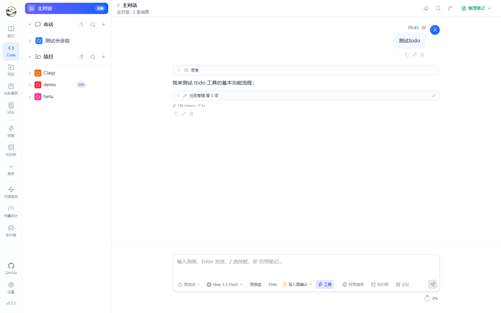

Agent workspace
Entry point: Code in the left navigation (route /code). Chat and coding sessions share one screen: a group / topic / session tree on the left, the message stream on the right. /chat and /work redirect here.

Sessions and topics
| Concept | Behaviour |
|---|---|
| Group | Container for topics, used to partition by theme or project |
| Topic | Own model, system prompt, context window and history; any message can be forked into a new topic |
| Lazy creation | New sessions / topics only take a placeholder slot — nothing is written until the first message is sent (the title comes from its first 50 characters) |
| Message actions | Copy, edit and resend, delete; thinking traces collapse; long replies can be copied as Markdown |
Streaming events
Replies stream over SSE and the UI renders each event type in its own block:
| Event | UI |
|---|---|
delta | Incremental body text |
| thinking | Collapsible reasoning trace (when deep thinking is on) |
| tool call / result | Tool name, arguments, output summary, expandable |
| web / knowledge / memory hits | Hit list (title plus snippet) that links back to the source |
| todo plan | Structured plan from the todo tool, checked off live |
steering | Shown when a mid-run instruction is accepted |
| checkpoint | File snapshot taken before a task |
| approval request | Risky operations ask for confirmation inline |
Input toolbelt
| Control | What it does |
|---|---|
| Web search | Rewrites the query, searches, and injects results with citations |
| Knowledge base | Vector recall over indexed notes, files and URLs |
| Memory | Recalls long-term memory scoped to global ∪ current session ∪ current project |
| Permission mode | plan / readonly / ask / auto / bypass (see below) |
| Model | Temporary model override for this request |
| Agent | Apply a prompt preset (may bring its own tool allowlist and approvals) |
| Reasoning effort | Low / medium / high — controls thinking and tool depth |
/ menu | Type / to invoke a skill or agent |
| Attachments | Images (for vision models) and files; very long pastes collapse into a block |
Permission modes
| Mode | Allowed |
|---|---|
plan | Planning and discussion only — no file writes, no side-effecting commands |
readonly | Read files and run read-only commands |
ask (default) | Every write or sensitive command asks for approval first |
auto | Routine operations run directly; sensitive ones still ask |
bypass | Everything allowed — only sensible in disposable environments |
Code sessions additionally have a run mode: interactive (confirm step by step) or Autopilot (run to completion). Approval granularity is configured per tool on the Agents page.
Queue and mid-run steering
- Queue: messages sent while a reply is streaming wait in a queue bar — edit, delete, send immediately, or let them fire after the current turn.
- Steering: inject an instruction into the running turn; the agent picks it up at its next loop iteration. Useful for “stop touching that file”.
Context and compression
- The ring indicator shows current context usage; compression can trigger near the threshold and posts a notice above the input.
- Compression is driven by the pipeline configuration (when to trigger, target size, which model summarizes); both pre- and post-compression tokens are recorded in usage.
What a request carries
| Field | Values / effect |
|---|---|
| Permission mode | plan / readonly / ask / auto / bypass — decides whether tools need approval |
| Run mode | interactive / autopilot (code sessions) |
| Toggles | webSearch / knowledgeBase / memory / deepThinking |
| Reasoning effort | low / medium / high |
| Model and agent | Per-request model override; an agent contributes its system prompt, tool allowlist and approvals |
| Attachments | Images (multimodal) and files; very long text collapses into a block before sending |
These toggles are cached per session in localStorage, so reopening a session restores the last state.
Distill a topic into a note
Four styles: summary, detailed, Q&A, or a custom prompt; streaming preview plus a notebook picker before saving.
Shortcuts
| Action | Keys |
|---|---|
| New session | Alt + N |
| Focus input | Ctrl / ⌘ + L |
| Recall previous input | ↑ in the input box |
| Send / newline | Enter / Shift + Enter |